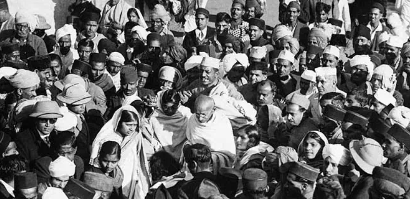
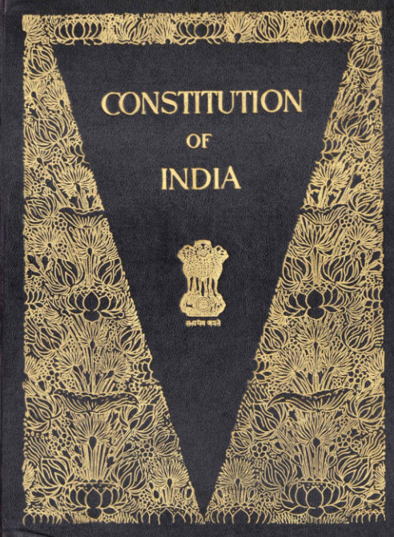

Origen
El origen de India se remonta a la **Civilización del Valle del Indo** (c. 3300-1300 a.C.), una de las más antiguas del mundo. Luego, los **arios** llegaron alrededor de 1500 a.C., estableciendo la **Edad Védica** y los fundamentos del hinduismo. En los siglos siguientes, surgieron grandes imperios como el **Maurya** y el **Gupta**, que expandieron el budismo y el hinduismo, marcando una época dorada de avances en ciencia y cultura.
A partir del siglo XII, las invasiones musulmanas condujeron al **Imperio Mogol** (1526-1857), dejando un importante legado cultural. Más tarde, India fue colonizada por los británicos (1858-1947). Tras una larga lucha liderada por figuras como **Mahatma Gandhi**, India obtuvo su **independencia en 1947**, marcando el nacimiento de la India moderna.
5 de agosto de 1947
Día de la Independencia de India. Después de casi 200 años de dominio británico, India logró su independencia, marcando el fin del colonialismo en la región.
26 de enero de 1950
Entrada en vigor de la Constitución de India. En esta fecha, India se convirtió oficialmente en una república democrática, estableciendo su sistema de gobierno moderno y sus principios constitucionales.